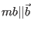
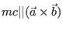
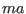
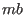
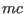

Next: subdirectory ./results - directory Up: Input Files Previous: mcphas.tst - input file Contents Index
Here is the file mcphas.tst for the simple antiferromagnet example describing some spin configurations to be used as starting values for the mean field process:
# Test spin configurations for meanfield calculation - module mcphas version 3.0 #<!--mcphase.mcphas.tst--> #********************************************************* # mcphas - program to calculate static magnetic properties # reference: M. Rotter JMMM 272-276 (2004) 481 #********************************************************** #! nofatoms=1 #!nofcomponents=3 # File Format: blocks of 3xnofatoms lines consisting of # ma[1] ma[2] ma[3] .... ma[n] # mb[1] mb[2] mb[3] .... mb[n] # mc[1] mc[2] mc[3] .... mc[n] # a configuration moments along c 0 1 0 0 -1 0 # end of configuration # new configuration 0 0 0 0 0 0 0 0 0 0 0 0 0 0 0 0 1 1 -1 1 1.1 -1 1 1 -1 1 1 -1.1 1 1 1 1 1 1 -1 1 1 -1 1 1 -1 1 1 -1 1 1.1 1 1.1 0 0 0 0 0 0 0 0 0 0 0 0 0 0 0 0 1 1 -1 1 1 -1 1 1 -1 1 1 -1 1 1 1 1.1 1 1 -1 1 1 -1 1 1 -1 1 1 -1 1 1 1 1 # end of configurationNote, in case of non-orthogonal axes the convention is ,  and  perpendicular to  and .